1. Встановлення залежностей та конфігурація проєкту (Завдання 1, 13)
На скріншоті відображено вміст файлу package.json та процес ініціалізації Node.js проєкту. Встановлено ключовий стек бібліотек: express для побудови маршрутів, bcryptjs для криптографічного захисту паролів, jsonwebtoken для реалізації безсесійної авторизації, а також morgan для логування HTTP-запитів у реальному часі. Використання бібліотеки dotenv дозволяє відокремити конфіденційні дані (секретні ключі JWT) від основного коду, що є стандартом безпеки при розробці Backend-систем.
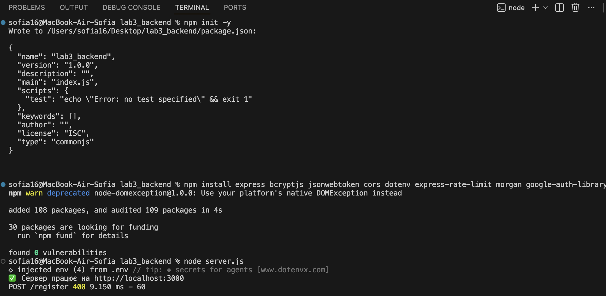
2. Валідація даних при реєстрації (Завдання 3, 7, 13)
Демонстрація обробки помилок на етапі вхідної валідації запиту POST до /register. На скріншоті видно результат спроби реєстрації з некоректними даними (паролі не збігаються або довжина пароля менша за 6 символів). Сервер перехоплює помилку, не допускаючи запису в базу, та повертає статус 400 Bad Request із детальним поясненням у JSON-форматі. Це забезпечує цілісність даних та запобігає створенню "сміттєвих" облікових записів.
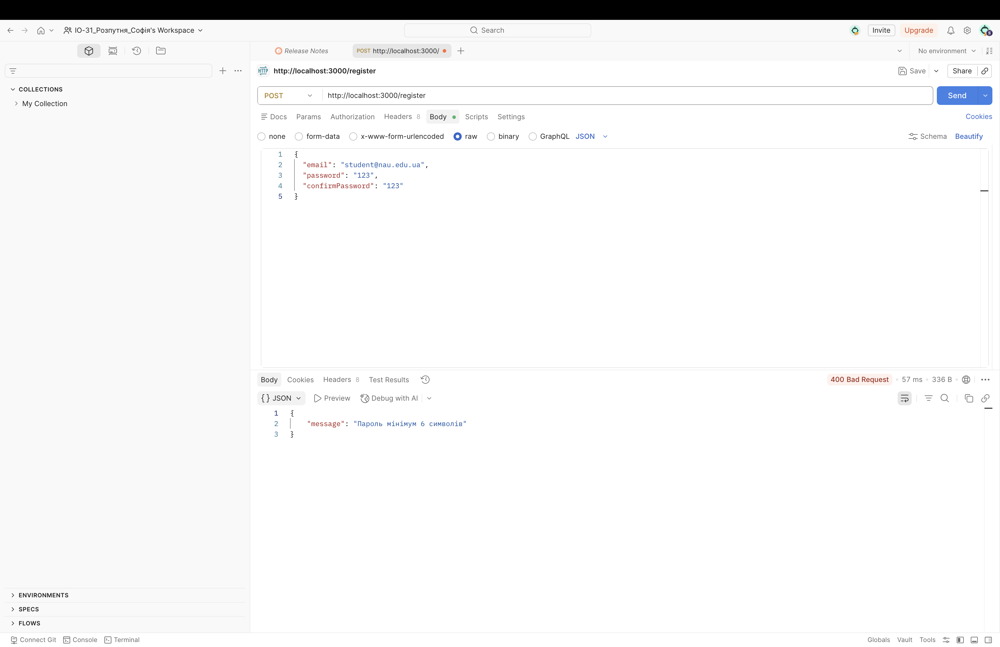
3. Успішне створення користувача та призначення ролей (Завдання 2, 8, 11)
Результат успішного виконання реєстрації. Бекенд-логіка реалізує автоматичне призначення ролі user кожному новому клієнту. Пароль проходить процес хешування (Salting + Hashing), що унеможливлює його прочитання у разі витоку бази даних. Кожному об'єкту присвоюється унікальний ідентифікатор id на основі мітки часу. Повернення статусу 201 Created підтверджує успішну імплементацію REST-принципу створення ресурсу.
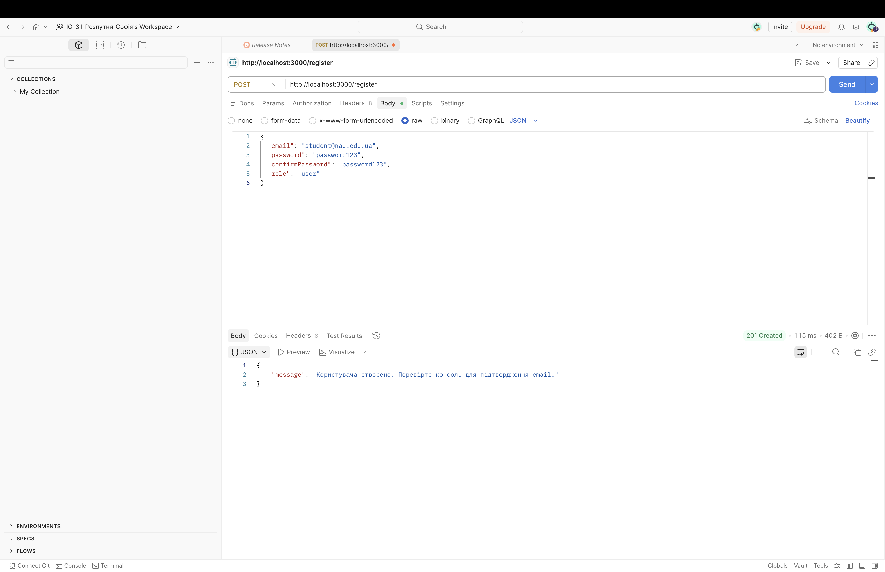
4. Верифікація Email через JWT-токен (Завдання 19)
Реалізація механізму підтвердження електронної пошти. При реєстрації генерується короткочасний JWT-токен, що містить email користувача. На скріншоті показано GET-запит до маршруту /confirm-email/:token. Сервер декодує токен, перевіряє його валідність та оновлює прапорець isConfirmed у профілі користувача. Це критично важливий етап захисту від реєстрації ботів.
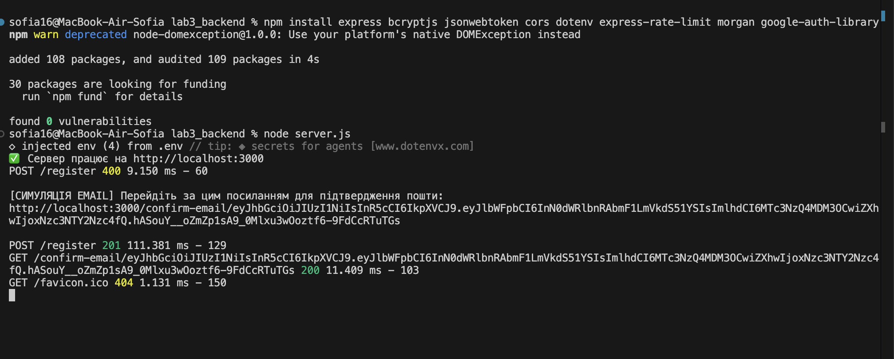
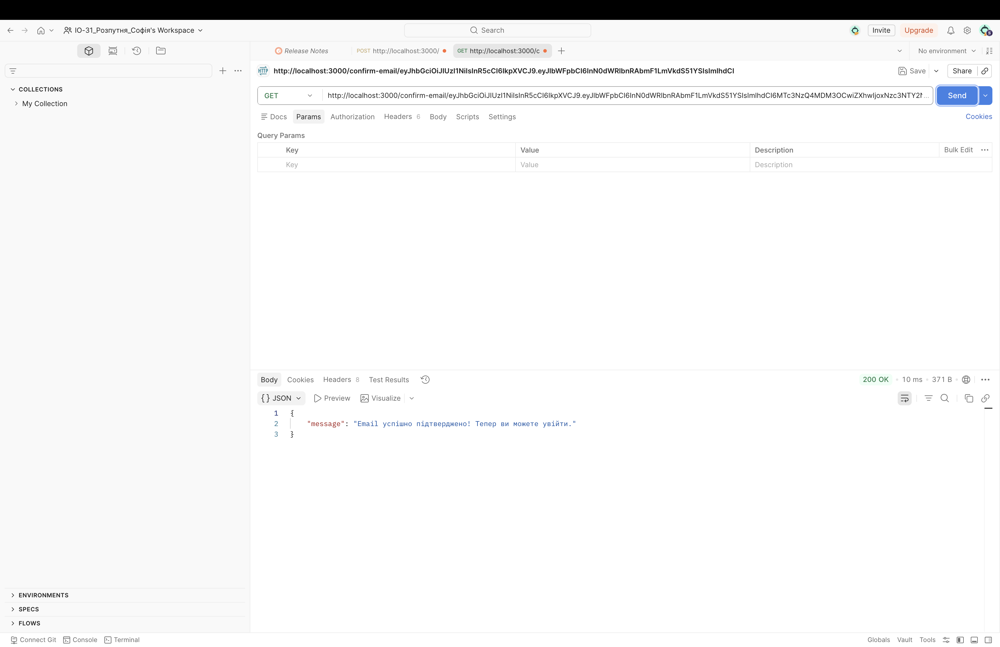
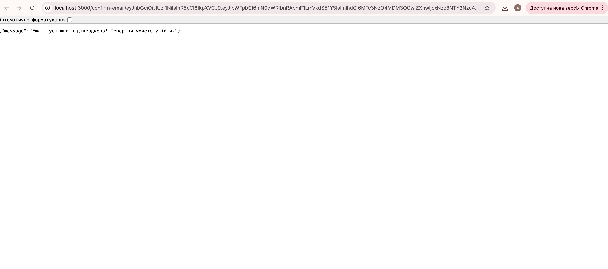
5. Авторизація та генерація пари токенів (Завдання 2, 12, 14)
Процес автентифікації користувача через POST /login. У разі успішного порівняння введеного пароля з хешем у базі, сервер генерує два токени:
accessToken — для підпису кожного запиту до захищених ресурсів.
refreshToken — для автоматичного оновлення сесії без повторного введення пароля.
Також на скріншоті видно роботу Middleware express-rate-limit, який обмежує кількість запитів для захисту від перебору паролів (Brute-force attack).
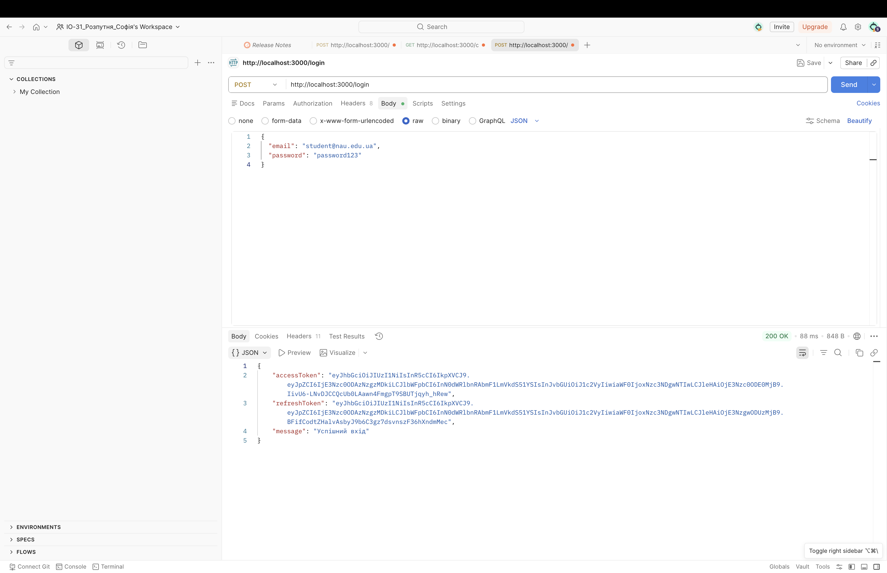
6. Доступ до захищених ресурсів через Middleware (Завдання 4, 15)
Тестування маршруту /profile. Доступ надається лише за наявності валідного Bearer-токена в заголовку запиту. Middleware verifyToken зчитує заголовок Authorization, перевіряє цифровий підпис токена за допомогою секретного ключа і, у разі успіху, прикріплює дані користувача до об'єкта запиту req. Це забезпечує розмежування прав доступу та захист персональної інформації.
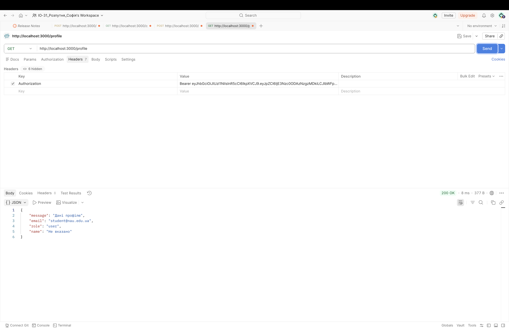
7. Модифікація даних профілю (Завдання 10)
Реалізація методу PUT для часткового оновлення ресурсу. Користувач може змінити своє ім'я або додаткові дані профілю. Сервер ідентифікує суб'єкта за його токеном, знаходить відповідний запис у файловій базі даних database.json, вносить зміни та перезаписує файл, зберігаючи актуальний стан системи.
8. Процедура зміни пароля (Завдання 16)
Робота маршруту /change-password. Алгоритм вимагає верифікації поточного (старого) пароля перед встановленням нового. Новий пароль також проходить валідацію на довжину та повторне хешування. Такий підхід гарантує, що зміну пароля виконує безпосередній власник акаунта, навіть якщо токен було викрадено, але пароль невідомий.
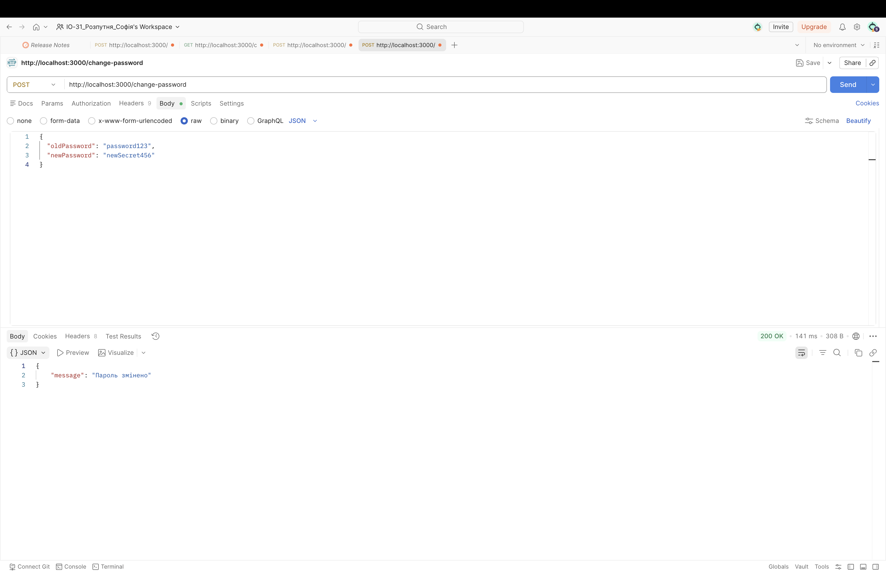
9. Відновлення доступу (Password Reset) (Завдання 18)
Демонстрація двоетапного відновлення пароля. На першому етапі (маршрут /forgot-password) сервер перевіряє існування email та генерує токен відновлення. На другому етапі користувач надсилає цей токен разом із новим паролем. Це реалізує безпечний механізм повернення доступу без залучення адміністратора системи.
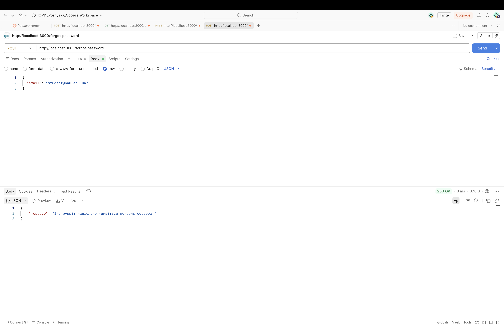
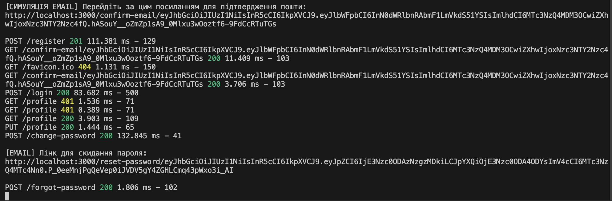
10. Завершення сесії та видалення акаунта (Завдання 9, 17)
На скріншотах показано процедури Logout та Delete Profile. При Logout refreshToken анулюється на сервері, що робить поточну сесію недійсною. При видаленні акаунта (метод DELETE) сервер повністю вилучає запис про користувача з бази даних, реалізуючи "право на забуття" згідно з вимогами безпеки сучасних веб-застосунків.
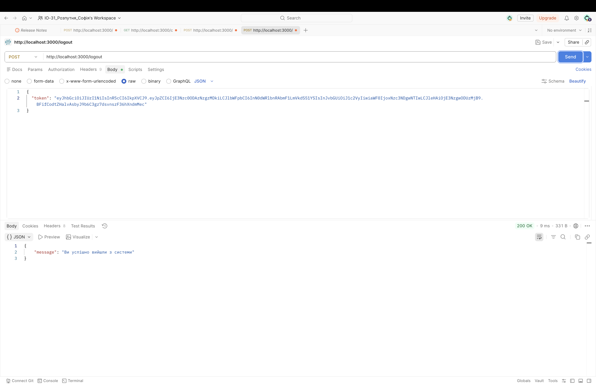
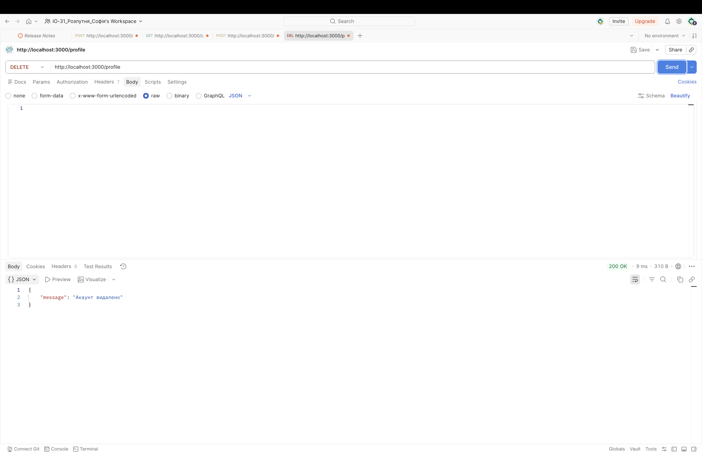
11. Перевірка стану бази даних (Завдання 11)
Візуалізація файлу database.json. Це кінцевий результат роботи системи збереження даних. Скріншот демонструє деревоподібну структуру JSON-об'єктів, де кожен користувач представлений як окремий елемент масиву. Особливу увагу приділено полю password, яке зберігається у вигляді незворотного хешу, що підтверджує виконання вимог щодо захисту конфіденційних даних.
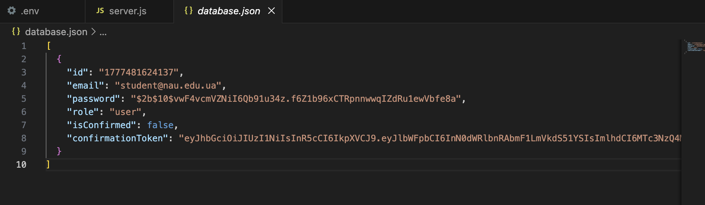